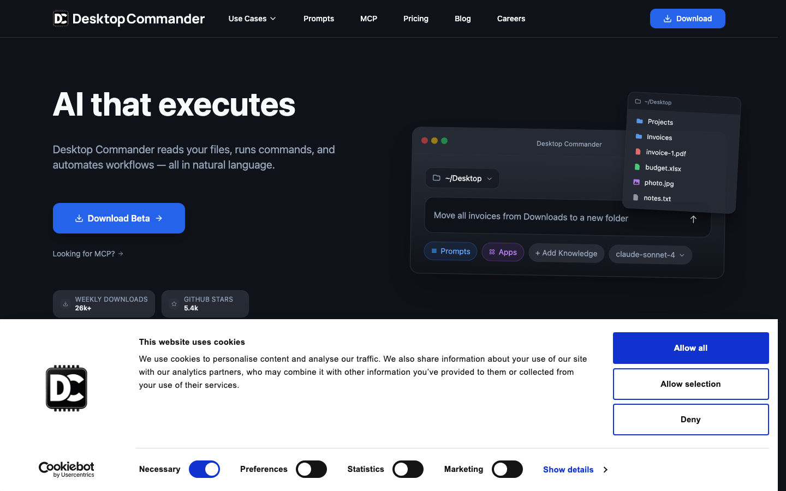
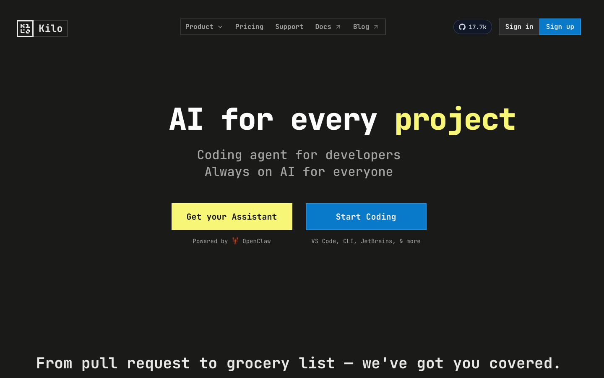
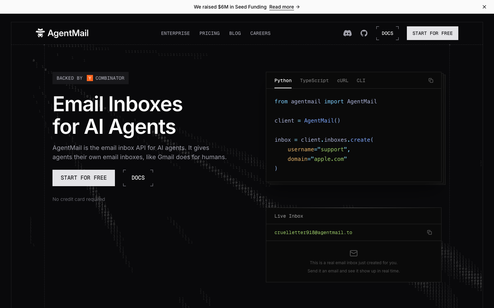
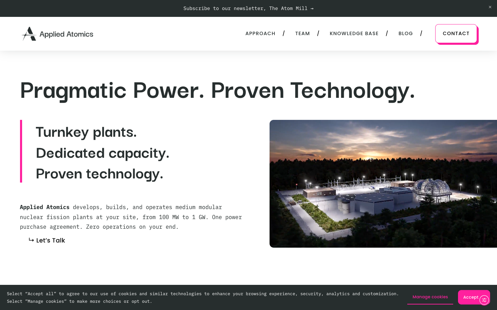
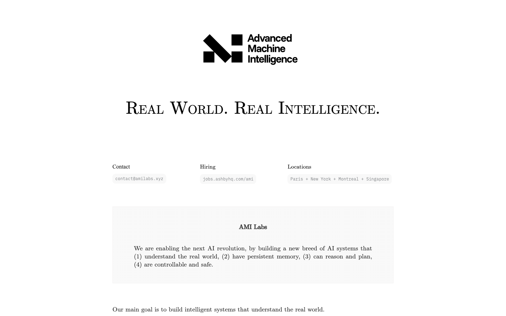
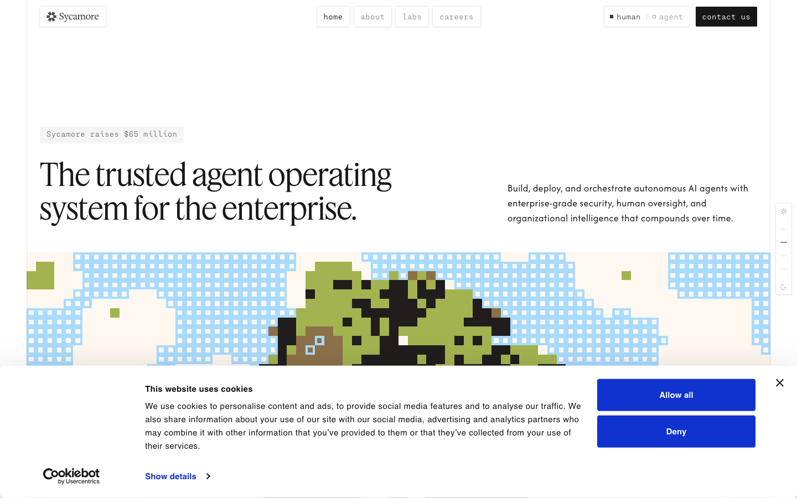
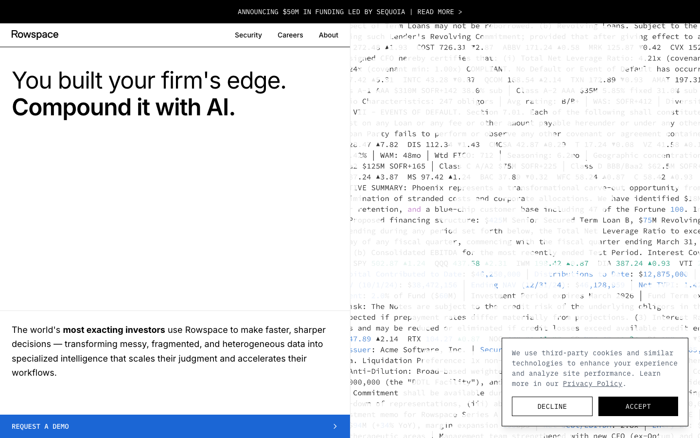
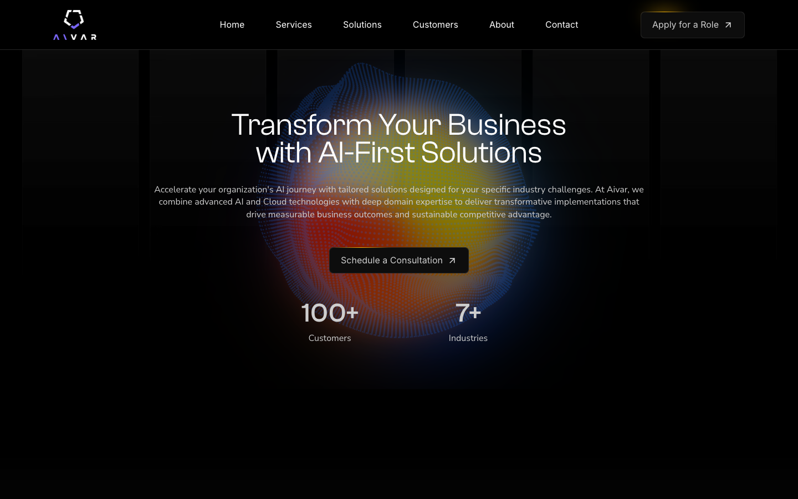
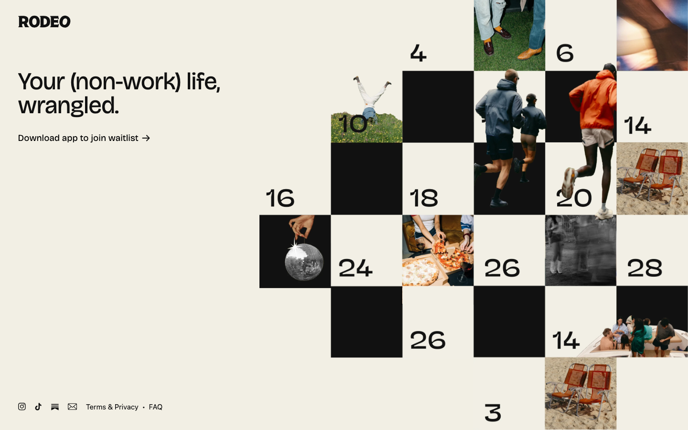

Do startup websites matter for fundraising? We blind-tested 9 recently-funded companies to find out.
April 5, 2026 · Desktop Commander
We wanted to answer three things:
1. Is our website "scrappy"? — How does desktopcommander.app compare to other seed-stage startups visually?
2. Do investors care about website polish at seed stage? — Is there any correlation between website quality and funding raised?
3. What can we learn from other seed startup websites? — What are the best sites doing that we're not?
Step 1 — Blind AI Critique: Puppeteer captured hero screenshots of all 9 sites at 1440px width. Each was sent to a separate Claude agent with NO company name or URL. Agents scored on 6 dimensions (1-10 scale).
Step 2 — Visual Design Review: A second pass evaluated pure visual aesthetics (typography, imagery, color, layout) to correct for AI bias toward content structure over design craft.
Step 3 — Head-to-Head: Desktop Commander was compared directly against each of the other 8 sites to identify specific strengths and weaknesses.
Combined score = average of AI blind score + visual design score. This balances content quality with visual polish.
Limitation: AI models are better at reading text on screenshots than evaluating visual aesthetics. The visual design scores are a manual correction, not a second automated evaluation. A professional designer would likely rank these differently.
Combined score = average of AI blind evaluation + human visual design review. Sorted by combined score. DC highlighted.
| # | Startup | AI | Visual | Combined | Vibe | Funding |
|---|---|---|---|---|---|---|
| 1 | Applied Atomics | 7.2 | 8 | 7.6 | Premium | $8.3M seed |
| 2 | Kilo Code | 8.2 | 6 | 7.1 | Polished | $8M seed |
| 3 | Sycamore | 6.7 | 7 | 6.9 | Polished | $65M seed |
| 4 | AgentMail | 7.3 | 6.5 | 6.9 | Minimal | $6M seed |
| 5 | AMI Labs | 7.2 | 6.5 | 6.9 | Technical | $1.03B seed |
| 6 | Rodeo | 5.0 | 8 | 6.5 | Editorial | $8.5M seed |
| 7 | Desktop Commander | 6.3 | 6.5 | 6.4 | Capable | $3M raising |
| 8 | Rowspace | 6.3 | 6.0 | 6.2 | Minimal | $50M seed+A |
| 9 | Aivar | 5.7 | 5 | 5.4 | Consulting | $4.6M seed |
Why this section exists: The AI blind scores above reward content structure and messaging clarity more than pure visual craft. This section describes what each hero section actually looks like and scores visual design only — typography, color, imagery, layout, distinctiveness. Scored separately from the AI evaluation.
| # | Startup | Visual Design | AI Score | What you see |
|---|---|---|---|---|
| 1 | Applied Atomics | 8 | 7.2 | Bright, high-contrast layout with oversized typography and a large photoreal plant render/photo. Feels like a modern deep-tech brochure: lots of whitespace, strong grid, one clear CTA. |
| 2 | Rodeo | 8 | 5.0 | Bold editorial checkerboard grid, high-quality lifestyle photos, confident typography. Most distinctive layout. But you can't tell what it does. |
| 3 | Sycamore | 7 | 6.7 | Bright editorial layout: huge serif headline, supporting copy, and a large pixel-art map graphic below. Distinctive and premium, but the hero is mostly messaging (little proof in the first viewport). |
| 4 | Desktop Commander | 6.5 | 6.3 | Dark dev-tool hero with real product mockup (strongest product visual in the set), traction badges, and clear CTAs. Competent, not distinctive. |
| 5 | AgentMail | 6.5 | 7.3 | Dark dev-tool hero with a YC-backed badge, an API code snippet, and a live inbox panel. Clean and focused. Standard dark-mode API page aesthetic but with unusually strong hero-level credibility signals. |
| 6 | AMI Labs | 6.5 | 7.2 | Ultra-minimal white research-lab page with a huge serif headline and a mission statement card. Very sparse — no product UI or imagery in the hero. |
| 7 | Kilo | 6 | 8.2 | Dark background, centered headline, two CTA buttons. No product visual in the hero; below the fold the page introduces product imagery, but the first viewport is still visually sparse. |
| 8 | Rowspace | 6.0 | 6.3 | White split-screen enterprise hero: big headline on the left, faded document collage on the right. Clean and credible, but the right side reads more like texture than a persuasive product visual. |
| 9 | Aivar | 5 | 5.7 | Dark hero with a large gradient orb, one CTA, and a couple of stat callouts. The full-page capture then drops into a long black gap before the proof sections, which makes the whole page feel more agency-like and less product-led. |
Key finding: AI scores and visual design scores still disagree sharply. Kilo scored 8.2 from the AI (1st place) but only 6 on visual design — clean structure, weak hero imagery. Rodeo scored 5.0 from AI (last) but 8 on visual (tied 1st). Human review also moved AgentMail and AMI Labs up to 6.5 because their compositions are stronger than the first pass gave them credit for, while Rowspace dropped to 6.0 because the hero screenshot is cleaner than it is compelling.
What specifically beats Desktop Commander, and where DC has the advantage. Record: 4 wins, 2 losses, 2 coin flips.
Why H2H and rankings disagree: The combined ranking puts DC at #7, but direct comparison still rewards things the isolated ranking underweights: a real product mockup, visible traction, and a concrete developer-tool use case. That helps DC against vaguer or thinner sites, but AgentMail and Applied Atomics still edge it on first impression.
| Opponent | Combined Result | Why they score higher / What beats DC | Why DC wins or ties / DC's advantage |
|---|---|---|---|
| Aivar $4.6M | DC WINS | Aivar has customer logos (Niyo, Karix, Zepic) and named testimonials with photos. Their team section with founder headshots adds human credibility. Colorful gradient art elements add visual interest. | DC is clearly a product company; Aivar reads as an IT consulting firm. DC has quantifiable traction (26K downloads, 5.4K stars) and shows its actual product. Aivar's gradient-heavy dark design is more visually active but less focused. DC wins on substance and clarity. |
| Rodeo $8.5M | DC WINS | Rodeo has the most distinctive visual identity in the set — bold editorial checkerboard grid with high-quality lifestyle photography. Pure visual craft: 8 vs DC's 6.5. | Rodeo's entire website is one screen. Zero scroll content, zero product explanation, zero traction metrics. You literally cannot tell what the app does. DC wins by having an actual website with an actual product and actual users. |
| Kilo $8M | COIN FLIP | Kilo is very focused and structured: a simple hero, then a “Meet Kilo Claw” section, then feature blocks in a straightforward layout with consistent spacing. Their content structure feels cleaner because they say fewer things. | DC has a real product mockup (Kilo shows none) and explicit traction badges (weekly downloads + GitHub stars). Kilo does show GitHub stars in the top bar, but the hero is still mostly text + buttons with no product visual. Kilo looks "polished" because it does less, not because the visual design is richer. |
| AgentMail $6M | DC LOSES | AgentMail has the sharper hero package: top funding bar, YC badge, instantly legible "Email Inboxes for AI Agents" positioning, and both a code panel and live inbox panel in the first viewport. It communicates category, credibility, and product proof faster than DC. | DC still has stronger visible traction (26K downloads, 5.4K stars) and a more literal product UI mockup. But the screenshot is partially obscured by the cookie modal, while AgentMail lands its message more cleanly and with stronger hero-level trust packaging. |
| Sycamore $65M | COIN FLIP | Sycamore has a more premium editorial feel — bright whitespace, huge serif headline, and a distinctive pixel-art map graphic. The visual polish is slightly higher (7 vs 6.5). It projects "well-funded platform play." | Sycamore’s hero has investor proof (raise tag + investor logo row), but no traction metrics and no product UI in the first viewport. “Trusted agent operating system for the enterprise” is still mostly positioning. DC tells you exactly what it does, shows the actual app, and includes usage metrics. Sycamore likely raised $65M primarily on team pedigree and thesis, not on the website. |
| Applied Atomics $8.3M | DC LOSES | Applied Atomics has oversized typography and a large photoreal plant render/photo — the strongest "deep-tech brochure" execution in the set. Their visual identity is memorable and distinctive. Visual design: 8 vs DC's 6.5. This is a clear gap. | DC has better quantifiable trust signals (downloads, stars). But AA is in a different category (nuclear energy with dramatic physical infrastructure to photograph) — this comparison is somewhat apples-to-oranges. AA's visual advantage comes from having physical products to photograph, which software companies inherently lack. |
| AMI Labs $1.03B | DC WINS | AMI Labs has confident extreme minimalism — ultra-white research-lab aesthetic, big serif headline, contact/location metadata, and a mission statement card. It signals pedigree, but provides little concrete product proof in the hero. | DC has a product mockup (AMI shows none in the hero). DC has visible traction metrics. DC's site communicates more about what the product does and who uses it. AMI Labs raised $1.03B on Yann LeCun's reputation, not on their website — a luxury most startups don't have. |
| Rowspace $50M | DC WINS | Rowspace has a clean enterprise split-screen hero with a faint document collage on the right and typography that feels slightly more refined than DC's. | Rowspace has a credible hero and a $50M announcement bar, but there’s still no visible customer proof in the first viewport — no logos, testimonials, or traction metrics. DC has 26K downloads, 5.4K stars, and a more explicit product demonstration, so it still wins on substance despite Rowspace’s cleaner typography. |
Record: 4 wins, 2 losses, 2 coin flips. Sites that rank above DC do so with cleaner information architecture (Kilo, AgentMail) or a more premium visual feel (Sycamore, Applied Atomics). In direct comparison, DC's real product mockup and visible traction still make it competitive against much of the set, but not enough to beat every cleaner or better-packaged hero.
Key insight: The three largest raises in this set (AMI Labs $1.03B, Sycamore $65M, Rowspace $50M) are not the three strongest websites in the sample. Funding here is clearly driven by pedigree, market, and traction outside the homepage — not by a simple "better site = bigger round" rule.
Each site was evaluated independently with no knowledge of company identity.

What you see: Dark background. Left: “AI that executes” headline, short subtitle, primary CTA “Download Beta” (blue) + secondary link, two metric badges (Weekly downloads 26K+, GitHub stars 5.4k). Right: large real product UI mockup (window chrome, chat interface, file browser). Note: screenshot includes a Cookiebot consent modal covering the lower portion of the page.
What works: Real substance — social proof elements demonstrate genuine traction, product demo screenshots show the tool in action rather than abstract marketing. The dark theme is consistent and appropriate for a developer-focused product.
What's weak: Some trust signals are present in the hero (downloads/stars), but the screenshot’s cookie modal obscures the lower viewport and deeper proof (testimonials/press) still sits below the fold. Typography weights and spacing feel slightly inconsistent. Feature sections are list-heavy rather than benefit-driven.
Biggest fix: Move the single most impressive trust signal into the hero section itself — user count, a quote from a known developer, or a recognizable logo — visible before any scroll.

What you see: Dark background with centered monospace headline “AI for every project” (highlight on “project”) and a short subtitle. Two large filled CTAs (yellow “Get your Assistant” + blue “Start Coding”), plus a small “Powered by OpenClaw” line and a top-nav area showing GitHub stars + Sign in/Sign up. No product visual in the hero; below the fold the page introduces a phone/product image and feature sections.
What works: Genuine product depth with feature sections, clear pricing, and UI previews. Design consistency holds across the entire scroll — rare at seed stage. Information architecture follows a logical investor narrative: problem → solution → features → proof → price.
What's weak: Trust signals (logos, testimonials, metrics) are not prominent enough. Some sections feel slightly template-adjacent despite strong visual execution.
Biggest fix: Add a "trusted by X teams" social proof band with recognizable company logos — the only thing separating this from a 9/10.

What you see: Dark background with a big “Email Inboxes for AI Agents” headline and short descriptor. “Backed by Y Combinator” badge and a top announcement bar about raising $6M. Left: CTAs (“Start for free”, “Docs”). Right: a tabbed code snippet panel plus a live inbox panel, so the hero shows both API syntax and the resulting mailbox UI.
What works: Coherent product story from hero to pricing. Customer logo bar signals the product is in use. Open pricing communicates confidence.
What's weak: Lacks distinctive visual identity — the dark+monospace aesthetic is the default for any 2024-2025 dev tool. Feature copy is functional but generic.
Biggest fix: Add one bold proof point — e.g., "Powering 50M+ agent emails/month" — to turn the logo bar from passive association into active validation.

What you see: Light background with oversized typography (“Pragmatic Power. Proven Technology.”). Left: stacked subhead lines + short paragraph describing nuclear fission plants and a “Let’s Talk” link. Right: large photoreal plant render/photo. Clean, brochure-like deep-tech aesthetic with lots of whitespace and a prominent “Contact” button in the top nav.
What works: Premium deep-tech site with high-quality technical imagery and a consistent visual language that communicates serious engineering credibility. Design system is cohesive throughout.
What's weak: Hero doesn't immediately tell you what the company does. Page reads more like a brochure than a conversion page. No single dominant CTA.
Biggest fix: Add a bold plain-English one-liner in the hero and a single high-contrast CTA that follows the user down the page.

What you see: Ultra-minimal white page: centered logo + large serif headline (“Real World. Real Intelligence.”), small pill-style info blocks (Contact/Hiring/Locations), and a centered mission statement card. No product UI or imagery in the hero — it reads like a research lab / manifesto page.
What works: The extreme minimalism feels intentional rather than cheap: oversized logo, serif headline, and the mission-statement card give it a research-lab / manifesto feel. Contact, hiring, and location details make the page feel real even though it is sparse.
What's weak: The page offers almost no concrete product proof in the hero — no UI, no customers, no visual explanation of what AMI actually ships. It reads more like a memo than a startup homepage.
Biggest fix: Add one clear product/use-case proof block above the fold — a demo visual, customer example, or even a concise "what we build" module.

What you see: Bright/white editorial layout: huge serif headline (“The trusted agent operating system for the enterprise.”) with supporting copy, minimal nav and a “human/agent” toggle, and a large pixel-art map graphic spanning the width below. Very premium-feeling typography and layout, but little concrete proof in the first viewport (and a cookie banner overlays the bottom).
What works: The light editorial layout is distinctive: huge serif typography, a memorable pixel-art landscape, and generous whitespace give Sycamore a premium feel. The deeper page also shows more structure and supporting sections than the hero alone suggests.
What's weak: The hero is still abstract. Outside the "$65 million" pill, there is little concrete proof of product reality in the first viewport, and the cookie banner obscures part of the illustration.
Biggest fix: Move concrete customer or product proof higher — a recognizable logo strip, usage metric, or product visual should appear before the first scroll.

What you see: White split hero: left huge headline (“You built your firm’s edge. Compound it with AI.”) + short paragraph, right a dense document/screenshot panel. Top announcement bar about $50M funding; bottom full-width blue CTA bar (“Request a demo”). Clean enterprise aesthetic and credible, but not visually distinctive.
What works: The split-screen composition is clean and enterprise-ready. The faint document collage on the right instantly cues the finance/legal domain, and the overall page keeps a disciplined, minimal tone.
What's weak: The hero is almost too sparse — the right panel reads more like texture than product proof, and there are still no customer logos, testimonials, or traction metrics in the first viewport. The cookie banner also competes with the CTA area.
Biggest fix: Replace the abstract document texture with a clearer product screenshot or customer proof block above the fold.

What you see: Dark hero with a large centered gradient orb/mesh behind the headline, one CTA ("Schedule a Consultation"), and two stat callouts (100+ customers, 7+ industries). In the full-page capture, a long black gap separates the hero from the logo/testimonial/team sections below, which makes the page feel animation-dependent and agency-like rather than product-led.
What works: Solid trust signals — real customer logos (Niyo, Karix, Zepic) plus named testimonials. Team section with founder photos adds credibility. Footer signals global presence.
What's weak: The dark gradient-heavy design creates large empty-feeling areas between content sections. Overall aesthetic is generic "AI agency dark mode" — could be any of a thousand similar firms. The value proposition doesn't land quickly enough in the hero.
Biggest fix: Tighten the hero spacing and make the value proposition immediately clear — right now the dark gradient art dominates over the message.

What you see: Cream background with bold checkerboard grid of high-quality lifestyle photos and numbers. Confident headline typography. The most visually distinctive site in the set — you'd remember this. However: the entire website IS this one screen. No scroll, no features, no explanation of what the product does. Beautiful design, zero substance.
What works: Genuinely distinctive visual identity — bold editorial checkerboard grid with lifestyle photography. Typography is confident. Would not look out of place next to a well-funded consumer brand.
What's weak: Entire website is a single screen with zero scroll content. Product is completely opaque. Only CTA is "Download app to join waitlist" — signals pre-launch with no traction.
Biggest fix: Add a one-line product descriptor that explains what the app actually does.
Combined score 6.4 out of 10. DC ranks 7th of 9 on isolated scores, ahead of Rowspace (6.2) and Aivar (5.4), and the blind evaluator's vibe word was "Capable," not "scrappy." It does still win or tie 6 of 8 direct comparisons because it is one of the few sites that shows both a real product UI mockup and visible traction metrics in the hero. The bigger issue is polish and packaging, not legitimacy.
AMI Labs raised $1.03B with a combined 6.9. Sycamore raised $65M with a 6.9. Rowspace raised $50M but only scored 6.2. Meanwhile Applied Atomics topped the ranking at 7.6 on only an $8.3M seed. The sample is small, but it does show that funding tracks far more than homepage craft alone — pedigree, traction, and market story matter at least as much.
Four concrete lessons from the comparison:
Information architecture often mattered more than ornamental polish. Kilo (ranked #2 combined) says fewer things more cleanly, and AgentMail packages its proof tighter than DC. DC has more substance than several prettier competitors, but a longer, less focused scroll. Editing content down is likely higher ROI than a cosmetic redesign.
Trust signals belong above the fold. Many critiques — including DC’s — flagged “proof buried below the fold” as a weakness. DC does show downloads/stars in the hero, but several competitors show little/no proof in the first viewport. The single most impactful change for most sites here: move your best metric, testimonial, or logo into the hero.
Distinctive imagery separates the top from the middle. Applied Atomics (#1) won on oversized typography plus a strong plant photo; Rodeo (#6) won visual attention with its editorial checkerboard; Sycamore stood out with a light serif/pixel-art composition. The dark-mode developer-tool sites converge toward a similar look much faster. DC's product mockup is one of the strongest actual product visuals in the set, but it still does not create the instant atmosphere that those more distinctive heroes do.
AI evaluation is unreliable for visual design. Kilo scored 8.2 from the AI (1st) but only 6 on visual design — text and buttons dominate the hero. Rodeo scored 5.0 from AI (last) but 8 on visual (tied 1st). AgentMail and AMI Labs also improved once the review focused on composition rather than just above-the-fold product proof. Any future comparison should use human designers for visual scoring.
Don’t start with a cosmetic redesign. First, spend 1–2 days on content restructuring: (a) move the best trust signal into the hero section; (b) cut the number of scroll sections — fewer things, cleaner flow; (c) tighten the headline/subheadline so the seed narrative lands faster. If you do bring design help in, aim it at information architecture + proof placement, not just surface-level polish.
Research conducted April 5, 2026. All AI scores from blind evaluation (Claude). Visual design scores from manual review. Screenshots captured via Puppeteer at 1440px viewport.
Source data on GitHub